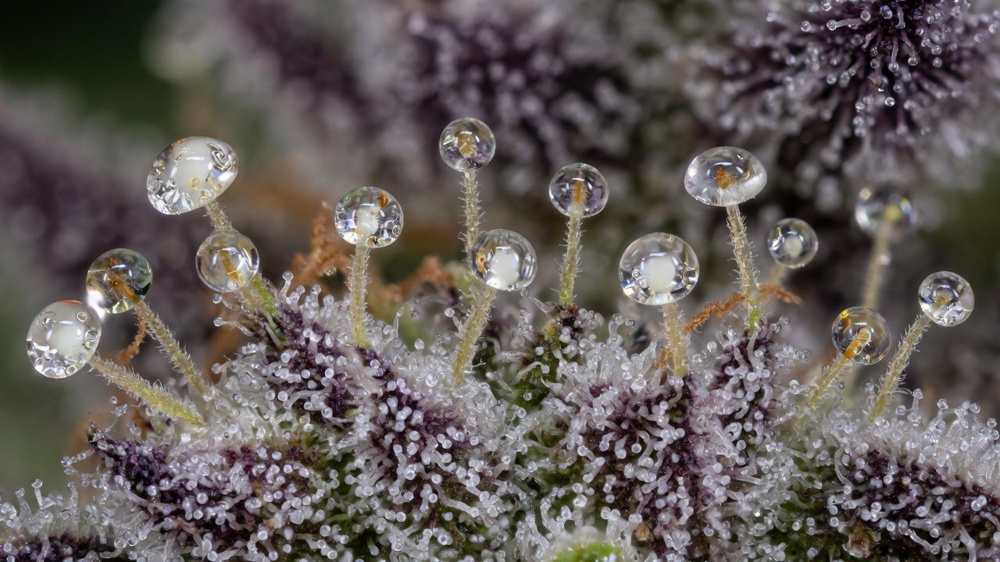
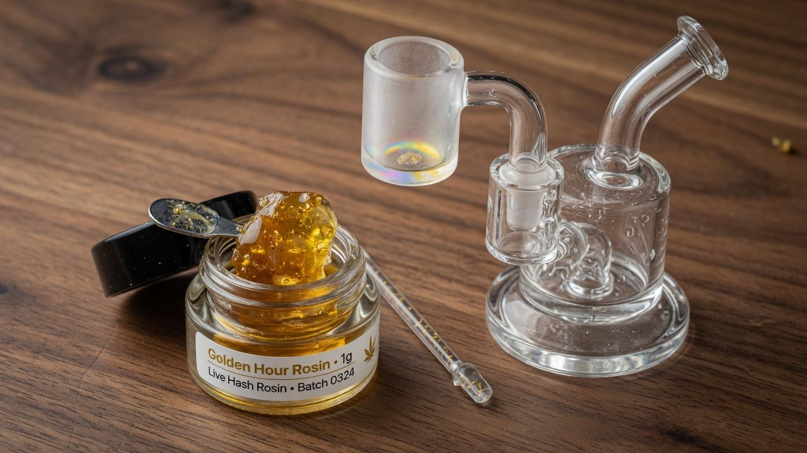
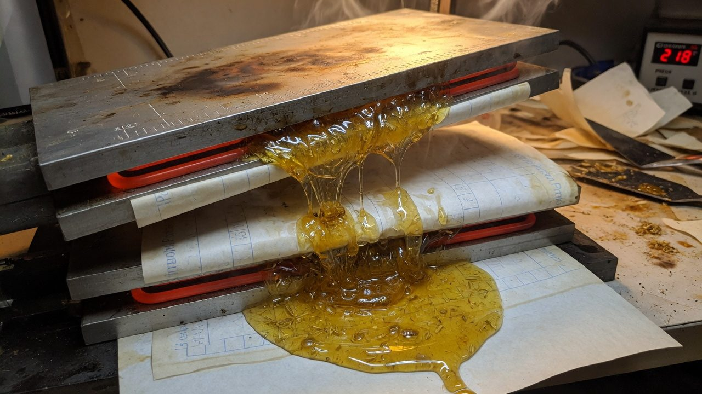
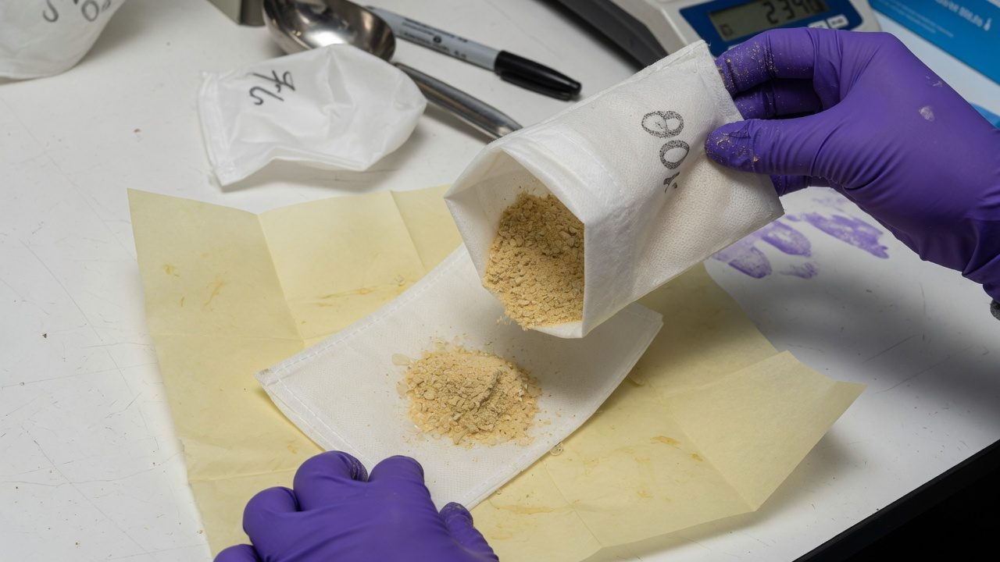
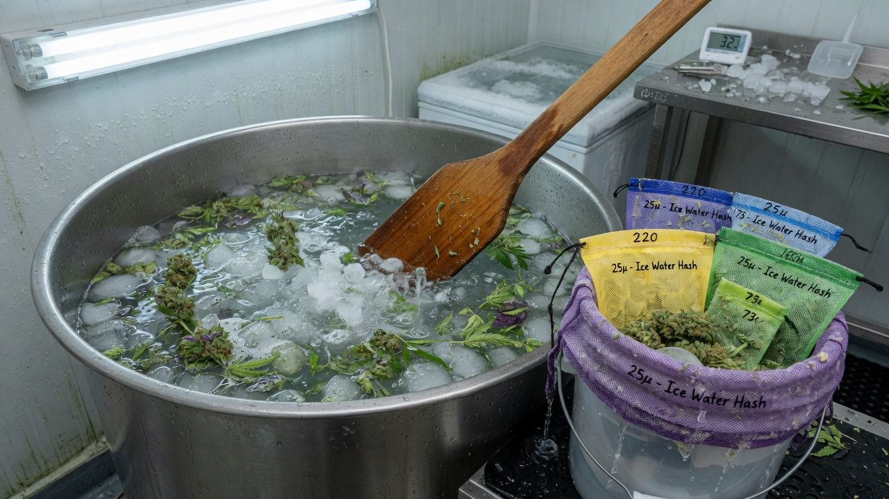
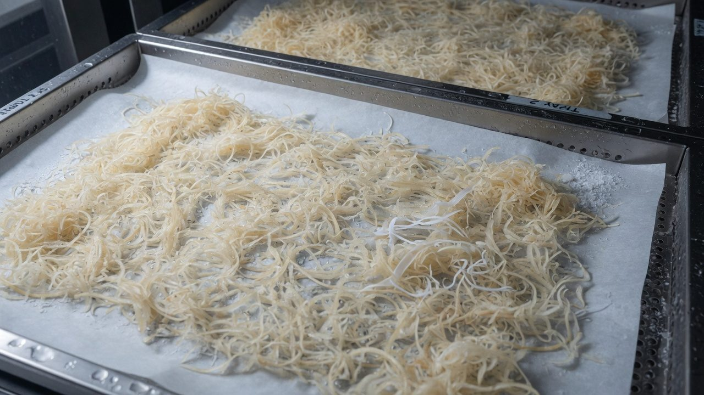
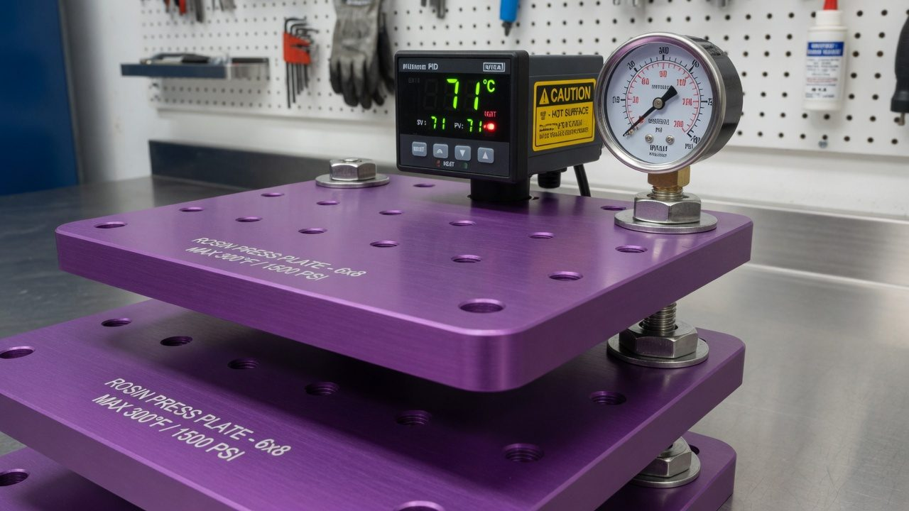
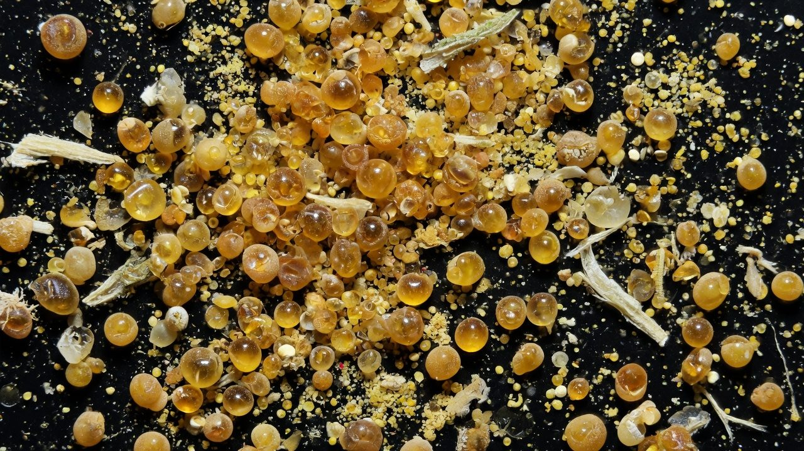
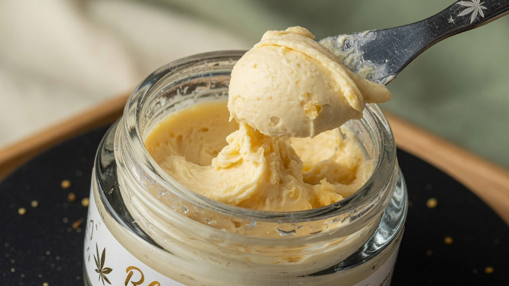
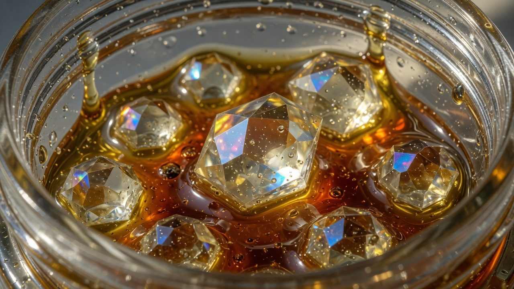

Hash rosin: heat, pressure and a micron screen
Rosin is a concentrate that you make with heat and force, without solvents. To make rosin, apply heat to the resin and push it through a mesh bag that has small holes. Then collect the oil that flows out. The steps before the press set the quality: the harvest, the wash and the drying. This paper shows all the steps from the trichome to the product.
Purpose and scope
A cannabis plant has a very large number of small glands. These glands are trichomes. Each trichome has a head on a stalk. On good flower, you can see the trichomes as white ‘crystals’.
Each trichome head is a very small bag of resin. Resin is a tacky oil that contains almost all of the potency, the aroma and the flavor of the plant. You make each solventless concentrate from these heads. You collect the heads and then press them with a small force. The method does not use chemical solvents. Examples of solvents are butane and alcohol.
The method has two parts:
- Make the hash. Remove the trichome heads from the plant and collect them as a powder or a paste. There are two usual methods. In the first method, you mix plant material in ice water. The heads break from the plant and fall in the water (bubble hash). In the second method, you rub dried material on small screens (dry sift).
- Press the hash into rosin. Seal the hash in a small mesh bag. Put the bag between two warm metal plates and apply force. The heat makes the resin soft. The pressure pushes the resin out through the mesh as an oil that has a gold color. This oil is rosin.
The method uses only heat plus pressure, and no solvents. Do not use too much heat or too much force. If the heat is too high, it removes the flavor. If the force is too high, it breaks the bag and pushes plant material through the mesh.
After the press, you do a cure of the rosin. In a cure, you keep the rosin at a set temperature, warm or cold. The cure sets the last texture of the rosin.
Then you can use the rosin as a dab, or put it in a vape cartridge. A dab is a small dose of rosin. You put the dose on a hot surface. The dose becomes vapor immediately, and you breathe the vapor.
The press cannot add quality. It can only decrease the quality of the material. A correct press run decreases it by a smaller quantity. The input material (the genetics, the harvest and the wash) sets the maximum quality. Heat, pressure, time and mesh size only change the part of this maximum that the rosin keeps.
In the next sections of this paper, the press has a set of controls: temperature, pressure, time and mesh size (‘micron’). The paper shows the effect of each control on the yield and the quality. It also shows the problems and how to correct them. If you do not know a term, go to the glossary at the end.

Definitions
This section gives definitions of the terms that this paper uses. Read the definitions one time. Then the next sections are easy to read.
| Term | Definition |
|---|---|
| Amber trichome | A resin head after the peak of ripeness. The head has an amber color. A small quantity of amber trichomes gives a stronger body effect. Too many amber trichomes decrease the potency. |
| Badder (or batter) | A soft, smooth texture of rosin. Rosin gets this texture when you do a cure and mix the rosin. |
| Blowout | The mesh bag breaks because of the pressure. Plant material then flows into the oil, and the batch is defective. |
| Bubble hash | Hash that you make when you mix cannabis in ice water. The trichome heads break from the plant and fall through the mesh bags. |
| Capitate-stalked trichome | The large gland with the most resin. It has a head on a stalk. This gland is the fraction that you want most. |
| Chromatography (reabsorption) | Oil that flowed out of the material and then goes back into the used material because the flow stops. The result is a low yield. |
| Cloudy trichome | A head at the peak of ripeness (the highest THCa and terpenes). It is the target range at harvest. |
| Cold chain | The steps that must stay cold: harvest, wash, drying, collection and storage. In these steps, heat decreases the quality. |
| Cold cure | A cure in which you keep sealed rosin at approximately 10 to 21 °C (50 to 70 °F) for days to weeks. The cure makes a soft, smooth badder. |
| Decarboxylation | In decarboxylation, heat changes THCa to active THC. Decarboxylation is necessary for vape cartridges. After decarboxylation, diamonds cannot crystallize. |
| Diamonds (THCa diamonds) | Clear crystals that are almost all THCa. You make the crystals from rosin, and they stay in the liquid ‘sauce’. |
| Dry sift (kief) | Hash that you make when you rub dried material on small screens. The trichome heads fall through the screens. The powder is kief. |
| Dwell time | The time for which the bag stays in the press with heat and force. |
| Effective pressure (PSI) | The force that the bag receives (force ÷ bag area). This value is important. The number on the gauge is not important. |
| Emulsion | A mixture that is not stable. Water in the oil causes it. The rosin has haze. |
| Freeze dryer (lyophilizer) | Equipment that removes water from frozen material in a vacuum. It dries the hash without heat. This method is the best for quality. |
| Fresh-frozen | Plant material that you freeze immediately after you cut it. You do not dry it. This procedure keeps the ‘live’ aroma. It is the input material for live rosin. |
| Full-melt | Hash of the highest grade (5★ to 6★). Almost all of it melts on a hot nail. It is the input for the press with the highest purity. |
| Hash hole | A pre-rolled joint with hash or rosin in the middle. |
| Lipids and waxes | Lipids and waxes are fats of the plant. They can cause haze in rosin. Flower contains more of them than hash. |
| Live rosin | Rosin that you press from fresh-frozen hash. Persons want it because it has the strongest aroma and flavor. |
| Melt grade (1–6★) | A scale of quality for hash. The scale shows how clean the hash is when it melts. A 6★ hash is full-melt. A 1★ or 2★ hash is for edibles only. |
| Monoterpenes | Monoterpenes are the terpenes with the smallest mass, for example pinene and myrcene. They have the highest rate of evaporation. Thus heat removes these aromas first. |
| Nucleation | The start of the change of rosin into crystals or into badder. Cold or time can start it. You can also start it when you mix the rosin. |
| PID | A temperature controller with high precision. It keeps the press plates at the set temperature. |
| Pre-press | The step in which you make the material into a puck with high density and no air, before pressing. This step prevents channels and blowouts. |
| Puck | The flat, used material that stays in the bag after pressing. |
| Sauce | The liquid oil with many terpenes around the THCa diamonds. It is a solventless hash oil with a high terpene content. |
| Static glove method | A method to clean hash. A glove with a static charge lifts clean trichome heads from a screen. The unwanted material stays on the screen. |
| THCa / THC | THCa is the acid in new plant material. It does not cause intoxication. Heat changes THCa to active THC. Only THCa can crystallize into diamonds. |
| Viscosity | The property that shows how easily the oil flows. When the viscosity is high, the oil does not flow easily. Heat decreases the viscosity. Thus the rosin flows. |
| Water activity (aw) | A value that shows the free moisture in the material, on a scale of 0 to 1. Use it to know when the material is correctly dry. The best value is 0.58 to 0.62. |
| Yield | The quantity of rosin that you get from a press. It is usually a percentage of the weight of the hash that you press. |
The solventless information and the SOPs of the author give the setpoints and the micron values in this paper. They also give the method to select the press settings for each type of trichome. The author compared all of them with the sources in this paper. This paper does not replace tests of your material. Record your runs to make sure that the values are correct.

Evidence and limitations
We want each paper to be correct. Thus we examine each paper for information that is not solid. This information comes from the view of one grower, from a small number of sources, or from grower methods that have no controlled test. We identify this information, and we do not show it as solid.
Frequently there is no paper for the decision that you must make. Then we use the reports of other growers and the methods that work in the rooms that we know. This information can help you, but it is not the result of a laboratory test. Use the methods that work for your plants, for your room and for your meters. If a table does not agree with your crop, use the data from your crop and record the difference.
- The primary definitions and the units of measurement in the paper
- Safety limits that have a citation to a regulation or a specification
- Target ranges for light, climate and feed in each stage. They are start values that you can change.
- SOPs that work in many rooms, but you must adjust them for your genetics and meters
- A number for yield or potency that you will always get, with no test at many sites
- Controller setpoints from a different facility, with no new calibration
If you find an error, make a report. We will correct it. Make the report on GitHub, with the name of the paper and the information that is incorrect. If you have a source, include it: Make a report of an accuracy problem. The regulations, labels and licenses of your area always override each procedure in these papers. The label weak in a paper shows the points where the risk of an error is highest.

Basic facts about the press
A rosin press has four controls: heat, pressure, time and screen (micron). All four controls change the balance of yield and quality (terpene content, color and clarity)[1]. Heat decreases the viscosity of the resin, thus the resin flows.
Cold resin has a high viscosity and does not flow easily. When the temperature increases a small quantity, the resin flows. The resin in a trichome has the same property. But the heat that lets the oil flow also removes the lightest aroma compounds.
The micron of the bag selects the materials that flow with the oil: only trichome oil, or also lipids and plant material. Pressure and time only help the oil to flow[2]. No control can increase the maximum quality that the steps before the press set.
You cannot press 6★ rosin from 3★ input. The wash, the drying and the grade set the maximum quality. The press and the cure can only keep this maximum or decrease it. The press temperature for hash is lower than for flower. Clean full-melt hash has a blowout if you increase the pressure too quickly.
The method is short. Set the quality of the input and select the product. Select a micron that agrees with the trichome heads, and set the lowest temperature that lets the oil flow. Increase the pressure only to complete the flow. Collect the rosin cold and cure it to get the texture.

Rosin production steps
Hash rosin is the last part of a longer sequence of steps. The diagram shows the steps of the cold chain in blue. In these steps, heat decreases the quality. In the press and the cure, heat is a tool.
- 1HarvestCut the plant at lights-off, when 80 to 90% of the trichomes are cloudy.
- 2Freeze or dryFreeze the plant immediately for live products. Dry the plant slowly for dry sift.
- 3Wash or dry siftMake bubble hash in ice water, or use dry sift screens. Do this work in a cold room and touch the material carefully.
- 4Dry the hashUse a freeze dryer. You can also dry the hash in cold air. This method has a low cost.
- 5GradeMelt a sample of the hash on a hot nail and give a grade from 1★ to 6★. The grade sets which products are possible.
- 6ConditioningDo a check of the moisture and make the hash cold. Make a pre-press puck for flower and dry sift only.
- 7PressApply heat with no pressure. Increase the force slowly. Hold the force until the flow stops.
- 8CollectUse a cold tool. Collect the rosin on new parchment and put it immediately into cold glass.
- 9Select the product pathwayThe alternatives are badder, sauce, diamonds, cartridge oil and the core of a hash hole.
- 10CureDo a cold cure, a warm cure or a crystallization in stages.
- 11StorageKeep the rosin in sealed glass, cold, with no light.
The next sections show each step with its values. The matrices and the problems show the control that you must change when a step has a problem.
Start setpoints for each input material
This section gives the first values for each of the four input materials. These values are start values. Change them in small steps until the result is correct. They are not targets[7].
The temperatures are plate temperatures. Press until the oil flows. Do not press for a set time. The temperature for hash is lower than for flower, because hash contains only trichome heads, without plant material. Only sufficient heat to melt the resin is necessary[1].
| Input material | Bag micron | Plate temperature | Range (°C / °F) | Dwell time (s) | Pressure method | Pre-press | Typical products |
|---|---|---|---|---|---|---|---|
| Dried flower | 90 µm (75–160) | 88 °C (190 °F) | 82–93 (180–199) | 90–180 | Low to moderate. Use a slow ramp of 30 to 60 s while the resin flows. Then decrease the force to a low value that holds the bag. | Yes | Badder and fresh press. Vape cartridges at 75 µm. |
| Dry sift / kief | 72 µm (25–90 for each grade) | 82 °C (180 °F) | 71–88 (160–190) | 60–90 | Low. Add time, not pressure. Small particles touch the bag fully. | Yes | Badder, diamonds |
| Fresh-frozen hash (5–6★) | 36 µm (25–45) | 71 °C (160 °F) | 60–77 (140–171) | 60–180 | Very low. Add heat only if the flow stops. More pressure is NOT better. More pressure pushes lipids through the mesh. | Only a cold puck. | Live rosin, badder with a cold cure, live diamonds, vape cartridges and hash holes. |
| Dried or cured bubble hash | 45 µm (25–90 for each grade) | 77 °C (171 °F) | 71–82 (160–180) | 60–120 | Low. Use a temperature that is a small number of °C higher than for full-melt hash, to help the oil flow. Keep the force low. | Only a cold puck. | Badder, diamonds and vape cartridges. |
Cold cure (after the press, not on the plates): 10 to 21 °C (50 to 70 °F) for days to approximately 2 weeks. This temperature makes a soft, smooth badder and keeps the monoterpenes[8].
Low-temperature press (for flavor): 60 to 85 °C (140 to 185 °F). This range gives the maximum terpene content and the highest lightness of the color. The range for hash is approximately 60 to 77 °C (140 to 171 °F). The range for flower of high quality is approximately 82 to 88 °C (180 to 190 °F).
Middle range (flower): 88 to 99 °C (190 to 210 °F). This range gives a high yield, and the terpenes decrease by a minimum quantity. It is a good start value if you do not know the flower.
High-temperature press (for yield, sauce and vape cartridges): 99 to 104 °C (210 to 219 °F). This range gives the maximum yield and the fastest flow, but the color is dark. Use it for material that has degradation[7].
Data, conditions and unknown values
Known facts
- The terpenes and the lightness of the color stay when the plate temperature is lower. The yield and the flow are higher when the temperature is higher, but the terpenes and the lightness decrease[1].
- A bag with a smaller micron gives rosin with less unwanted material and a higher lightness, but the yield is lower. A bag with a larger micron has the opposite effect.
- The temperature for hash and dry sift is lower than for flower, because they contain heads without plant material.
- Heat in a sealed container keeps more terpenes than heat in open air. In a sealed container, the air above the rosin saturates with terpenes, thus the net evaporation stops. In open air, the oxygen causes oxidation of the terpenes and the air removes them[13]. The lightest monoterpenes have the highest rate of evaporation. They go out of the rosin first[16].
- Only THCa can crystallize into diamonds. After decarboxylation to THC, it stays liquid[5]. For vape cartridges, full decarboxylation is necessary. For diamonds, the THCa must not change.
Conditions for the values in this paper
- You make the hash correctly and you dry it correctly (with a freeze dryer or with cold air) before you put it between the plates.
- Your press keeps the temperature accurately (PID control or control from an app) and applies the same heat on all the area of the two plates.
- Your work area is clean and cold, and you record your runs. Thus you can change one control at a time.
Unknown properties that change the correct values
- Size and range of size of the trichome heads. They are different for each cultivar. They have more effect on the micron than all other properties.
- Quantity of lipids and waxes. It is different for each type of genetics and material. Flower contains more than hash.
- Crystallization. The ratio of terpenes to THCa sets if diamonds crystallize easily or not easily.
- Accurate moisture. A change of a small number of percent in RH changes the flow, the clarity and the risk of a blowout.
Four connected press balances
As in a grow room, the press has a small number of connected balances. When you change one control, the other controls change.
All four balances change the same pair of values: yield ↔ quality. Almost all adjustments increase one value and decrease the other. Before you change a control, make a decision about the value that is more important.
Press controls
This section gives all the controls in groups. The groups are in the same sequence as the steps. The controls before the press set the maximum quality. The press controls set the balance of yield and quality. The controls after the press set the texture.
Material controls (before the press)
| Control | Property that it changes | Direction of effect |
|---|---|---|
| Trichome maturity | Potency and terpene profile at harvest | Cloudy trichomes are at the peak. Clear trichomes have a low maturity, and the yield is low. Amber trichomes have degradation. |
| Fresh-frozen or cured material | ‘Live’ terpene profile and stable condition of the material | Fresh-frozen material has the highest monoterpene content, and the press temperature is the lowest. For cured material, the press temperature is a small quantity higher, to let the material flow. |
| Quality of the wash or dry sift, and melt grade | Purity of the heads (the grade in ★) | A higher grade gives a higher yield and rosin with less unwanted material. You can set the temperature lower and the micron smaller. |
| Micron fraction that you collect | The head sizes that you keep (73–120 µm is the best range) | Full-melt fractions give rosin with the minimum quantity of unwanted material. Fractions that are not full-melt add color and contaminants. |
| Moisture (RH) | Water content of the input | Too dry: low flow and low yield. Too wet: haze, emulsion and blowout. |
| Cultivar | Head size, quantity of lipids and crystallization | It sets the micron, the risk of a blowout and how easily diamonds crystallize. |
Press controls
| Control | Property that it changes | Direction of effect |
|---|---|---|
| Plate temperature | Viscosity and flow of the resin | The yield and the flow increase. The terpenes and the lightness of the color decrease. |
| Applied force and effective pressure (PSI) | Force that pushes the oil through the screen | The yield increases to a limit. ⚠ After this limit, the risk of a blowout increases and contaminants go through the screen. |
| Dwell time | The time that the bag stays in the press with heat and force | The yield increases. If the heat continues for a long time, the terpenes decrease. |
| Ramp profile | How quickly the force increases to the target force | A slow ramp gives a smaller number of blowouts and a flow with less unwanted material. A fast ramp increases the risk that the bag breaks. |
| Micron bag | Selection of the materials that flow through the screen | A smaller micron increases the purity and decreases the yield. A larger micron has the opposite effect. |
| Load density | Where the oil flows, and the pressure in each area of the bag | A load with no air, equal in all areas, gives an equal flow, a smaller number of channels and a smaller number of blowouts. |
| Pre-press | Makes a puck with high density and no air | Decreases channels and blowouts (flower and dry sift). Do not do a pre-press for full-melt hash. |
| Plate size and load | Heat area and quantity of material for each run | Select the plate size for the batch. If the bag is too full, the cold edges of the plates stop the flow. |
Controls after the press
| Control | Property that it changes | Direction of effect |
|---|---|---|
| Collection temperature | Sets the texture on the parchment | A cold collection keeps the terpenes and sets a clean texture. |
| Type, temperature and time of the cure | Last texture | A cold cure makes badder. A warm cure makes sauce. A cure in stages makes diamonds. |
| Agitation of the rosin | Equal mixture and nucleation | Agitation makes badder. Too much agitation makes the rosin warm and decreases the aroma of the terpenes. |
| Nucleation trigger | If and when the rosin crystallizes | A cold cure, or a small quantity of heat with agitation, starts nucleation. |
| Decarboxylation | THCa to THC for vape cartridges | Necessary for vape cartridges. After decarboxylation, diamonds cannot crystallize. |
| Storage | Shelf life | Cold storage in a sealed container with no light keeps the terpenes and the cannabinoids. |
Matrix of the effects of the press controls
This matrix shows the effect on each result when you increase a press control (for the micron, when you use a smaller micron). It shows the direction of the effect, with all other conditions the same. ↑ = increases, ↓ = decreases, → = small change, ⚠ = the risk increases.
| Control that you change → | Yield | Terpene content | Color (lightness) | Clarity | Blowout risk | Change of the texture |
|---|---|---|---|---|---|---|
| ↑ Plate temperature | ↑ | ↓ | ↓ | ↑ (oil with a low viscosity flows with less unwanted material) | ↓ | Sap or shatter |
| ↑ Pressure and force | ↑ to a limit | → | ↓ if the force is too high | ↓ (it pushes lipids and small particles through the screen) | ⚠ ↑↑ | Wetter, with contaminants |
| ↑ Dwell time | ↑ | ↓ | ↓ | → | → | More decarboxylation. The rosin becomes sap. |
| ↓ Micron (a bag with a smaller micron) | ↓ | → | ↑ | ↑↑ | ⚠ ↑ (more resistance to the flow) | Less unwanted material, harder texture |
| ↑ Moisture (wetter input) | ↑ then ↓ | → | → | ↓↓ (haze and emulsion) | ⚠ ↑ | Not stable, greasy texture |
| ↑ Pre-press density | ↑ | → | → | ↑ | ↓↓ safer | Equal flow |
The primary information is this: temperature and micron are the controls for quality. Pressure and time are the controls that complete the flow. Use heat and the screen first. Use force only to complete a flow that the heat started[2].
Matrix of symptoms and controls
Examine the result and find the control that has an incorrect value. Make one correction. Change only one control in each run. Thus the cause of the next result is clear.
| Symptom | Control with an incorrect value | Correction |
|---|---|---|
| Low yield. The oil does not flow, or it goes back into the material. | The temperature is too low, the material is too dry, the pressure is too low, or the micron is too small. | Increase the temperature by 3 to 6 °C (5 to 11 °F). Examine the moisture. Use more force and a slower ramp. Use the next larger micron. |
| Dark or green rosin | The temperature is too high, the force is too high, or the input has contaminants. | Decrease the temperature. Use a slower ramp. Use a smaller micron. Start with a higher grade. |
| Rosin with haze, or ‘wet’ rosin | Too much moisture or too many lipids | Dry the input and adjust its moisture. Use a lower temperature. Use a bag with a smaller micron. |
| Weak aroma and weak flavor | The temperature is too high, the dwell time is too long, or the collection is hot. | Use the range for a cold press. Decrease the dwell time. Collect the rosin cold. Seal the rosin immediately. |
| Bag blowout | The pressure increases too quickly, the bag is too full, the micron is too large for the heads, or there is no outer bag. | Use a slow ramp of 15 to 20 s. Use an outer bag of 120 to 160 µm. Use a smaller load. Select a micron that agrees with the size of the heads. |
| The rosin stays as sap and does not become badder. | Not nucleated | Do a cold cure in a sealed jar at 13 to 16 °C (55 to 61 °F) for 24 to 72 h. |
| The rosin becomes badder quickly and without control, and it has a greasy texture. | Moisture stays in the input after the drying. | Dry the hash fully before pressing. |


Example: one change of the plate temperature
One small change causes other changes. Use full-melt fresh-frozen hash and increase the plate temperature from 71 °C → 77 °C (160 °F → 171 °F). Keep all other conditions the same.
Control that you change
Plate temperature +6 °C (+11 °F). The temperature is in the range for hash (60 to 77 °C / 140 to 171 °F). The bag is 36 µm. The ramp is slow.
First effects
- The viscosity of the resin decreases. The seam of the bag becomes wet after a shorter time, and the oil flows more quickly.
- The yield increases. Less oil stays in the puck.
- The risk of a blowout decreases by a small quantity. The oil has a low viscosity and flows out before the pressure becomes high.
Secondary effects
| Property that changes | Direction | Cause |
|---|---|---|
| Terpene content | ↓ | The monoterpenes with a high rate of evaporation (α-pinene, myrcene) start to go out of the rosin when the temperature increases[16] |
| Color | ↓ (dark color) | More heat gives a stronger amber color |
| Texture | badder → sap | When the rosin from a hotter press is cold, it has a more liquid texture (sauce). It becomes badder more slowly. |
| Result in the cure | Slower nucleation | A higher temperature keeps more material in solution. A cold cure is longer. |
Use the change for hash with a low grade, or for cured hash, when the hash does not release oil. Also use the change when you make sauce, diamonds or material for vape cartridges. For these products, it is satisfactory when the terpenes decrease by a small quantity, for more flow and yield.
The change is not correct for 5★ to 6★ fresh-frozen hash that you press for live badder. A live badder has a strong terpene aroma. For this product, the six degrees decrease the aroma and increase the yield by only a small number of percent. This result is not good. The correct plate temperature is 71 °C (160 °F), and the yield is lower.

Pressing methods for each step
This section shows all the steps from the plant to the dab, one step at a time, with the important values for each step. All the steps before the press are steps of the cold chain. In these steps, heat decreases the quality.
Harvest and trichome maturity
The harvest sets the maximum quality for all the next steps. The usual target is 80 to 90% cloudy capitate-stalked trichomes with 10 to 20% amber and no clear trichomes. This range is only a target. You can use other values. Hash makers frequently use less amber, because amber heads give rosin with a dark color and a greasy texture.
Many growers harvest at lights-off, but no known data show that a harvest at lights-off is necessary. For dry sift, harvest when the maturity of the trichomes is a small quantity lower. Stalks with too much ripeness break easily into small pieces. These pieces are contaminants[10].
Fresh-frozen material, or dry and cure
- Fresh-frozen material (for live rosin and ice-water hash): Freeze the material immediately after you cut it. Do not dry it. This keeps the ‘live’ monoterpene profile. The press temperature for this material is the lowest, and the rosin has the highest purity.
- Slow dry (for dry sift): Hang each plant at 15 to 18 °C (59 to 64 °F) and 55 to 60% RH, in full darkness, with a light airflow. Keep the plant there for 10 to 14 days. The stems must break and not bend. The water activity must be 0.58 to 0.62 aw (the safe range is 0.55 to 0.65, and 0.55 is the limit of too dry). Then freeze the material after trimming for 4 to 6 h (24 h is best). The stalks then break easily[10].
Ice-water wash (cold chain)
For bubble hash, mix fresh-frozen material in water that is almost frozen. The trichome heads break from the plant and fall through a stack of micron bags[14].
| Property | Target | Information |
|---|---|---|
| Water temperature | ≤ 4 °C (39 °F) | Add ice. RO water or distilled water keeps the water clean. The low temperature keeps the heads without damage. The heads break from the plant easily. |
| Work bag | 220 µm | It holds the plant material. The heads fall through the bag to the stack that is below it. |
| Collection stack | 160 · 120 · 90 · 73 · 45 · 25 µm | Full-melt heads are in the range 73 to 119 µm (the best range is 73 to 90 µm). The range 120 to 160 µm is a middle grade. Heads of less than 45 µm are the grade with the smallest heads. |
| Agitation | Light agitation, 1 to 5 min for each wash | Mix with your hands, or use equipment at a low speed. A lighter agitation gives heads with a higher purity. |
| Cycles | 2–4 washes | The first wash is the lightest and has the highest quality. The next washes give a higher yield, but with more unwanted material. |
Alternative: dry sift (cold chain)
Do not use water. Do the work in a cold room (less than 10 °C / 50 °F). Use a card to move the frozen material across a stack of screens, from large holes to small holes. Use a light force for 3 to 5 min for each pass[10].
- Screen stack: a work screen of 140 µm (110 LPI), a screen of 107 µm, and the primary screen of 70 µm (200 LPI). The material that falls through the 70 µm screen is edible grade. Heads of 70 to 120 µm are the best.
- Static glove method: Make a glove of black nitrile cold in a freezer and use it on a 70 µm (200 LPI) screen. Move the glove in smooth circular movements, a small distance above the screen. The static charge lifts clean heads and the contaminants stay on the screen. Remove the heads from the glove, make the glove cold again and do 3 to 5 passes. Do not push the glove on the screen[4].
Drying of the hash (cold chain)
- Freeze dryer (lyophilizer), best method: Set the condenser to −40 to −50 °C (−40 to −58 °F). Set the vacuum to approximately 100 to 200 mTorr (a pressure of less than approximately 500 mTorr is sufficient). Dry for 24 to 48 h, until the hash is fully dry. This method removes water without heat or oxidation.
- Cold air drying (low cost): Use a microplane to put small pieces of the patties on parchment or screens. Dry them in a cold room for 24 to 72 h. This method has a higher risk of oxidation and contamination. Examine the hash for mold.
Grading and moisture conditioning
Melt a sample of the hash on a hot nail and give a grade of 1★ to 6★ (6★ = 95%+ heads, full-melt). The grade sets the products that you can make. It also sets how small a micron and how low a temperature you can use. Make the hash and the bag cold before pressing. Cold material in the bag gives a smaller number of blowouts.
| Grade | Purity | Products |
|---|---|---|
| 6★ full-melt | 95%+ heads | Dab without a press. Rosin of high quality. Vape cartridge grade. |
| 5★ near full-melt | 85–95% | Rosin of very good quality. Vape cartridge grade, with correct pressing. |
| 4★ half-melt | 70–85% | Good rosin. For vape cartridges, it can be necessary to clean the hash more. |
| 3★ | 50–70% | Grade for edibles, or you must clean the hash. |
| 1–2★ | <50% | Only for edibles. It has too many contaminants for rosin. |
Many hash makers use 3★ to 4★ as the usual grade for the press. They keep 5★ to 6★ full-melt hash for a dab without a press[1]. This hash melts clean without a press. To press full-melt hash into rosin is a selection of texture and type of product. The press does not increase the quality.
Pre-press and bag load
- Put 2 to 7 g (0.07 to 0.25 oz) in the inner bag. Fold the open end two times. Do not fill the bag too much. Keep space for the flow.
- For diamonds, mechanical separation, and each run with a high risk of a blowout, put the inner bag in an outer bag of 120 to 160 µm.
- For flower and dry sift, make a puck with high density and no air (a pre-press puck). The puck stops channels. For full-melt hash, do not do a pre-press with heat. At most, make a puck with a light force and without heat, to compress the load. Material of high grade flows without a puck.
- Put the bag in folded parchment. The open seam must point to you.
The press
- Close the plates on the bag, or almost on the bag. Apply heat for 30 to 60 s with no pressure.
- Increase the force slowly in 15 to 20 s. Examine the seam. The seam becomes wet and the oil flows.
- Hold the target force for 60 to 120 s (a maximum of 180 s), or until the flow stops. Press until the flow stops, and not to a number[2].
- Release the force. The yield from clean 5★ to 6★ input is usually 60 to 80%[3]. If the yield is less than 50% with good input, a step before the press is incorrect.
Collection (cold chain)
Collect the rosin immediately with a cold dab tool on new parchment. Then put the rosin in glass that is cold and seal the glass. A cold collection keeps the terpenes and sets a clean texture. Go immediately to your product pathway.

Effects of the equipment
Each tool has different controls. Select the press type for the size of the batch. For work at a low temperature, select a press with accurate temperature control.
Press type
| Type | Force | Batch | Best for | Information |
|---|---|---|---|---|
| Manual lever | 0.5–5 t | 0.5–12 g (0.018–0.42 oz) | Personal scale to craft scale | Good for small hash runs. It is harder to keep the force stable. |
| Hydraulic | 5–25 t | 4–150 g (0.14–5.3 oz) | Craft scale to commercial scale | The primary type. Use it with PID plates for accuracy. |
| Pneumatic | 5–8 t | 7–35 g (0.25–1.2 oz) | Craft scale to commercial scale | The ramp is smooth and the same each time. This type is the best for hash pressing with a light force. |
| Electric or hybrid | 0.75–20 t | 1–115 g (0.035–4.1 oz) | Personal scale to commercial scale | You do not use your hands to operate the press. App control or PID control gives accurate low temperatures. |
Plates, bags and equipment for the cold chain
| Tool | Control | Effect |
|---|---|---|
| Plates and heat zones | PID accuracy, equal heat | An accurate and equal temperature gives the same flow and color in each run. Plates with a low cost have changes of temperature and burn the rosin. |
| Micron bag | Mesh size | Hash: 25 to 45 µm (full-melt) to 90 µm (low grade). Flower: 75 to 160 µm. Dry sift: 25 to 90 µm. |
| Outer bag | 120–160 µm outer bag | The outer bag holds the inner bag, thus the inner bag does not break. The outer bag is the primary protection from a blowout. |
| Pre-press mold | Puck density and shape | A puck with equal density and no air gives an equal flow. Use it for flower and dry sift only. |
| Wash vessel and bags | Agitation, micron stack | Light agitation and a clean stack give heads with a higher purity. |
| Freeze dryer | Condenser temperature, vacuum and time | Drying without heat keeps the live profile. It is the usual method for hash when quality is important. |
| Collection and storage | Cold tool, sealed glass, refrigerator | A cold collection and cold, sealed storage with no light keep the terpenes. |


Matrix of the input and the trichomes
Examine the material with a loupe or a microscope. Then select the settings for the material that you see. The head size and the unwanted material set the micron. Do not select a small micron only because it is small.
| Material and trichomes | Bag micron | Plate temperature | Ramp | Best product |
|---|---|---|---|---|
| Heads of more than 100 µm, with a low quantity of contaminants | 90 µm (115 µm if the flower is very clean) | Low end of the range | Slow | Badder |
| Heads 70–100 µm | 45–73 µm | 88–99 °C (190–210 °F) for flower, or a lower temperature for hash | moderate | Badder or live rosin |
| Heads of less than 70 µm, or a high quantity of small particles | 25–37 µm | A small quantity higher, to push the oil through | Slow. Do not fill the bag too much. | Be careful. The risk of a blowout is high. |
| A high percentage of cloudy trichomes, and a high percentage of heads without damage | Select for the head size | 71–85 °C (160–185 °F) | Slow | Badder with a cold cure |
| A low percentage of heads without damage (broken or with degradation) | Select for the head size | 99–104 °C (210–219 °F), shorter dwell time | moderate | Vape cartridges or sauce |
| High percentage of contaminants | Smaller micron (25–37 µm) | + a small number of °C | Pre-press with more force. Slow ramp. | Collect the oil. Do not try to make full-melt rosin. |
| Fresh-frozen hash (clean, large heads) | 36–90 µm | 60–85 °C (140–185 °F) | Slow | Live rosin |
Small heads and small particles go through a screen with a large micron, or make channels in it. This condition is the usual cause of a blowout. Use a smaller micron. Use a slower ramp. Do not fill the bag too much.
Product pathways after the press
The same new rosin from the press changes into each solventless product, through the controls after the press. The press setpoint sets the oil at the start. The cure sets the product at the end.
| Product | Press setpoint | Cure and finish | Result |
|---|---|---|---|
| Fresh press of live rosin | Cool 60–77 °C (140–171 °F, hash) | Use the rosin when it is new. Keep it cold. | Texture of sap, with a strong terpene aroma |
| Badder or jam with a cold cure | Cool press | Sealed jar at 10 to 21 °C (50 to 70 °F), for days to 2 weeks[8] | Soft and smooth texture |
| Sauce | Cool press, then nucleate | Warm cure | Wet, with a high terpene content |
| Diamonds and sauce (mechanical separation) | Nucleate first (cold cure at 13–16 °C / 55–61 °F) | Press in steps with a temperature that increases: 40 → 46 → 52 → 57 °C (104 → 115 → 126 → 135 °F)[11]. Melt the THCa puck for a short time, to make it flow. Hash makers use approximately 120 to 130 °C / 248 to 266 °F. This temperature is high and can start decarboxylation, thus keep the time short. Mix the THCa with the sauce again, in the ratio that you want. A frequent ratio is approximately 70/30. | Clear diamonds in sauce |
| Diamonds (jar method or jam method) | Press to make clean rosin | Sealed jar: apply heat at 93 °C (199 °F) for 1 to 2 h. Then let the rosin crystallize at 38 °C (100 °F) for 1 to 2 weeks[12] | Crystal balls in jam |
| Vape cartridge oil | Press clean and cool. Hash with low lipids is best. | Do decarboxylation in a sealed container, at a low temperature for a long time. In a measurement, the terpenes in the rosin at approximately 71 °C (160 °F) for approximately 6 days decreased by only approximately 3%[13]. A decarboxylation in a sealed container at a higher temperature is faster, but the terpenes decrease more[6]. Remove the gas from the rosin. Do a refrigerator test for 24 h. Fill the cartridge at approximately 32 °C (90 °F)[9]. | Clear and stable cartridge oil |
| Core of a hash hole | Cool 60–77 °C (140–171 °F), full-melt that holds together | Make the rosin into a long, thin shape while it is soft | A core that has the shape of a donut and melts clean |
Do not start a diamond press at a high temperature. At a high temperature, THCa dissolves in the terpenes and flows out with them. The diamonds go out with the sauce[11]. The same occurs with salt in hot water. When the water is hotter, more salt stays in solution. Less salt crystallizes when the water becomes cold.
A press in steps at a low temperature removes the terpenes slowly. Then the THCa has no solvent and stays in the bag. Decarboxylation is a change in one direction only[15]. THC after decarboxylation cannot crystallize[5].
Use jars and lids that have a specification for this task. Keep the jars away from your face. Open a jar only after it is cold. The pressure in a sealed jar increases during decarboxylation and the jam method, because the rosin releases CO₂. Standard lids of mason jars release the pressure automatically at approximately 5 psi[13].
Frequent problems
Sequence of the press controls
Set the controls in this sequence. Each step sets a limit for the next step. If you do not do the first steps, the next steps cannot give a good result.
- 1Set the maximum quality of the input firstThe genetics, the harvest maturity, the quality of the wash or dry sift, and the moisture set the maximum. You cannot get good rosin from input of low quality with a press.
- 2Select the productThe alternatives are badder, live rosin, diamonds, a vape cartridge or a hash hole. This selection sets the temperature range and the cure.
- 3Select the micron from the head size and the contaminantsLarge, clean heads: use a larger micron. Small heads or small particles: use a smaller micron. Do not select a small micron only because it is small.
- 4Set the temperature range for the material and the productSelect the lowest temperature that lets the oil flow. The temperature for hash is low. The temperature for flower is higher. For material with degradation, the temperature is higher than for flower.
- 5Increase the pressure only to get the flowHeat is first. Force is second. The pressure only completes a flow that the heat started.
- 6Collect the rosin cold, then do a cure to get the textureA cold collection keeps the terpenes. The cure (cold, warm or in stages) sets if the product is badder, sauce or diamonds.
- 7Storage and check of the resultsKeep the rosin cold, with no light, in a sealed container that does not let air in. Record the yield and the grade. In the next run, adjust one control.
Troubleshooting
The table gives the symptom, the possible cause and the first checks. Start at the top of the table. Most problems are in the steps before the plates.
| Symptom | Possible cause | First checks |
|---|---|---|
| Yield much less than 50% with a good grade | The temperature or the pressure is too low, or the material is too dry | Measure the plate temperature. Examine the moisture. Use more force and a slow ramp. Increase the temperature by 3 to 6 °C (5 to 11 °F). |
| Dark or green rosin | The temperature is too high, the input has contaminants, or the pressure is too high | Decrease the temperature. Make sure that the grade and the purity are correct. Use a smaller micron. |
| Haze, not stable, or the rosin divides into parts | Moisture or lipids | Examine the drying and the conditioning. Use a lower temperature. Use a bag with a smaller micron. |
| Weak aroma or flavor | Too much heat or too much oxygen | Use a lower temperature. Collect the rosin cold. Keep it in sealed, cold storage. |
| The bag broke | The ramp is too fast, the bag is too full, or the micron is too large | Use an outer bag. Use a slower ramp. Use a smaller load. Select the correct micron. |
| Diamonds do not crystallize | The cure temperature is too high, or the rosin has THC from decarboxylation or has no nucleation | Decrease the temperature to approximately 38 °C (100 °F). Make sure that the rosin is new, has nucleation and has no decarboxylation. |
| The vape cartridge has a blockage, or the oil crystallizes again | Not all of the THCa changes to THC. Oil in which the THCa is more than approximately 50% of the weight crystallizes again. | Do decarboxylation again in a sealed container, to a conversion of 90% or more. Do a refrigerator test for 24 h before you fill the cartridge[6] |
| The results are different in each run | Conditions that you do not control | Record all the data. Change one control in each run. |
Control of the rosin procedure
The most important information is the sequence:
Trichome grade and moisture set the maximum quality. Then heat decreases the viscosity of the resin. Then pressure pushes the oil through the screen. The micron selects the materials that go through: only oil, or oil with lipids and plant material.
The yield and the purity change in opposite directions. Then the collection temperature sets the texture. Then the cure sets if the product is badder, sauce or diamonds. Cold, sealed storage with no light keeps the product.
Use heat for the flow, the screen for purity and the pressure only to complete the flow. Then do a cure to get the texture. The steps before the press set the quality. The press can only keep the quality or decrease it.
References
- The Press Club. Rosin press temperature guide (cold-press vs hot-press bands by material; yield/terpene trade). Industry technical guide, not peer-reviewed. (source not from a journal, for example from a manufacturer) https://thepressclub.co/blogs/tips-tricks/rosin-press-temperature-guide
- The Press Club. Rosin press pressure guide (effective PSI at the bag; ramp-to-flow technique). Industry technical guide. (source not from a journal, for example from a manufacturer) https://thepressclub.co/blogs/tips-tricks/rosin-press-pressure-guide
- The Press Club. How to make THCa rosin (yield expectations and separation practice). Industry technical guide. (source not from a journal, for example from a manufacturer) https://thepressclub.co/blogs/tips-tricks/how-to-make-thca-rosin
- The Press Club. Cleaning dry sift with rubber-glove static tech. Industry technical guide. (source not from a journal, for example from a manufacturer) https://thepressclub.co/blogs/tips-tricks/cleaning-dry-sift-with-rubber-glove-static-tech
- Lowtemp Industries. How to make solventless diamonds (THCa crystallisation from rosin; decarb destroys diamond potential). Manufacturer knowledge base. (source not from a journal, for example from a manufacturer) https://www.lowtemp-plates.com/blogs/knowledge/how-to-make-solventless-diamonds
- Lowtemp Industries. How to make 100% solventless rosin cartridges (decarb, degas, fridge test, fill). Manufacturer knowledge base. (source not from a journal, for example from a manufacturer) https://www.lowtemp-plates.com/blogs/knowledge/how-to-make-100-solventless-rosin-cartridges-lowtemp-industries
- Triminator. Rosin press temperature chart (per-material bands and dwell times). Manufacturer technical guide. (source not from a journal, for example from a manufacturer) https://thetriminator.com/rosin-press-temp-chart/
- Triminator. How to cold-cure rosin (sealed-jar cold cure for badder; temperature and timing bands). Manufacturer technical guide. (source not from a journal, for example from a manufacturer) https://thetriminator.com/how-to-cold-cure-rosin/
- Triminator. How to make rosin carts (fill temperature and stability testing). Manufacturer technical guide. (source not from a journal, for example from a manufacturer) https://thetriminator.com/how-to-make-rosin-carts/
- Richardson M (‘Bubbleman’). Tricks & tips to make full-melt dry sift hash. High Times (140/107/70 µm three-screen method). (source not from a journal, for example from a manufacturer) https://hightimes.com/grow/tricks-tips-to-make-full-melt-dry-sift-hash/
- Hashtek. Mechanical THCa separation tek (progressive low-temperature pressing, ~105-135 °F; hot starts dissolve THCa into the terpene fraction). Practitioner tek. (source not from a journal, for example from a manufacturer) https://hashtek.ca/thca-tek/
- Hashtek. Rosin jam tek (sealed jar ~93 °C for 1-2 h, then ~38 °C for 1-2 weeks to crystallise). Practitioner tek. (source not from a journal, for example from a manufacturer) https://hashtek.ca/jam-tek/
- Hashtek. Decarb experiment: lid vs no lid (sealed 71 °C/142 h decarb lost ~3% total terpenes; open-air decarb lost ~12%, monoterpenes worst; mason lids self-vent ~5 psi). Practitioner experiment. (source not from a journal, for example from a manufacturer) https://hashtek.ca/decarb-experiment-lid-vs-no-lid/
- The Original Resinator. How to press bubble hash into rosin (wash-to-press workflow). Manufacturer guide. (source not from a journal, for example from a manufacturer) https://www.theoriginalresinator.com/blog/how-to-press-bubble-hash-into-rosin/
- Wang M, Wang Y-H, Avula B, et al. (2016). Decarboxylation study of acidic cannabinoids: a novel approach using ultra-high-performance supercritical fluid chromatography/photodiode array-mass spectrometry. Cannabis and Cannabinoid Research 1(1):262-271. https://pmc.ncbi.nlm.nih.gov/articles/PMC5549281/
- Eyal AM, Berneman Zeitouni D, Tal D, et al. (2023). Vapor pressure, vaping, and corrections to misconceptions related to medical cannabis' active pharmaceutical ingredients' physical properties and compositions. Cannabis and Cannabinoid Research 8(3):414-425. https://pmc.ncbi.nlm.nih.gov/articles/PMC10249740/
Each citation in the paper, for example [1], refers to an item in this list. Each item is a primary source or an instruction from an authority, unless the item shows a different type. The results of cannabis tissue culture change much with the genotype. Before you use the dilutions, hormone doses and local regulations, make sure that they agree with the primary sources.